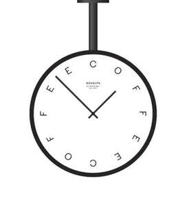

Trade Mark Journal No.2025/020 16 May 2025
UK00004196263 29 April 2025 (8,16,21,25,26,30,35,43)

- Class 8
- Spoons.
- Class 16
- Books; paper and cardboard; printed matter; notebooks; pens; publications and printed materials; bookbinding material; photographs; stationery and office requisites, except furniture; instructional and teaching materials; plastic sheets, films and bags for wrapping and packaging; paper coffee filters; carrier bags of paper or plastic / shopping bags of paper or plastic; disposable napkins; stickers; stickers [stationery].
- Class 21
- Ceramics for household purposes; coasters; coffee cups; coffee services [tableware]; cups; cups of paper or plastic; cup holders; cup lids; dishes; drinking vessels; earthenware / crockery; flasks; Insulated bottles [flasks]; Insulating sleeve holders for beverage cups; mugs; pottery; reusable cups; saucers; travel mugs. .
- Class 25
- Aprons [clothing]; caps being headwear; hats; hooded pullovers; sweaters / jumpers [pullovers] / pullovers; tee-shirts; tops [clothing]. .
- Class 26
- Badges for wear, not of precious metal; ornamental novelty badges; pins; pins, other than jewellery.
- Class 30
- Coffee, tea, cocoa and artificial coffee; rice, pasta and noodles; tapioca and sago; flour and preparations made from cereals; bread, pastries and confectionery; chocolate; ice cream, sorbets and other edible ices; sugar, honey, treacle; yeast, baking-powder; salt, seasonings, spices, preserved herbs; vinegar, sauces and other condiments; ice (frozen water); coffee-based beverages; tea-based beverages.
- Class 35
- Business management, advertising and administration services relating to coffee shop, restaurant, snack bar and catering services; franchising services relating to coffee shop, restaurant, snack bar and catering services, namely providing business assistance in the establishment and/or operation of restaurants, cafes, coffee houses and snack bars; retail store services connected with coffee, tea, food, books and crockery; on-line retail services connected with coffee, tea, food, books and crockery; retail services connected with coffee, tea, food, books and crockery provided by mail order; wholesale distribution (excluding transport) of coffee, tea, food, books and crockery; organisation, operation and supervision of incentive schemes to promote the purchase and sale of coffee, tea, food, books, kitchenware and crockery; loyalty scheme services; information, consultancy, and advisory services for all of the aforesaid services.
- Class 43
- Services for providing food and drink; café services; coffee bar, coffee house, and coffee shop services; takeaway food and drink services; restaurant services; snack bar services; coffee supply services for offices; office coffee supply services; food preparation services; preparation of carry out foods and beverages; provision of facilities for the consumption of food and beverages; information, consultancy, and advisory services for all of the aforesaid services.
Rosslyn Coffee Limited
Representative: Stevens and Bolton LLP